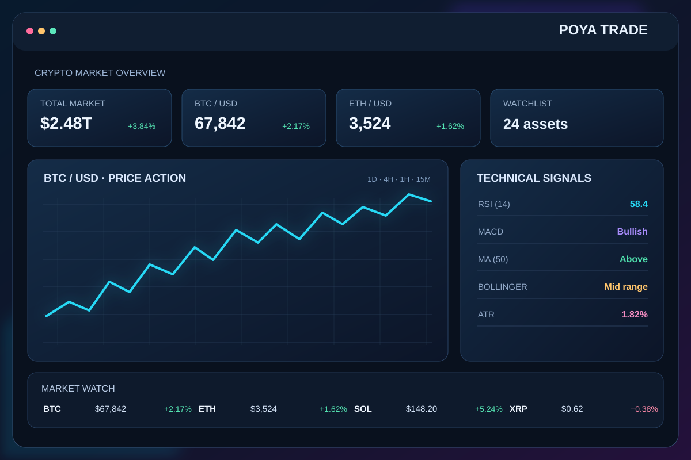
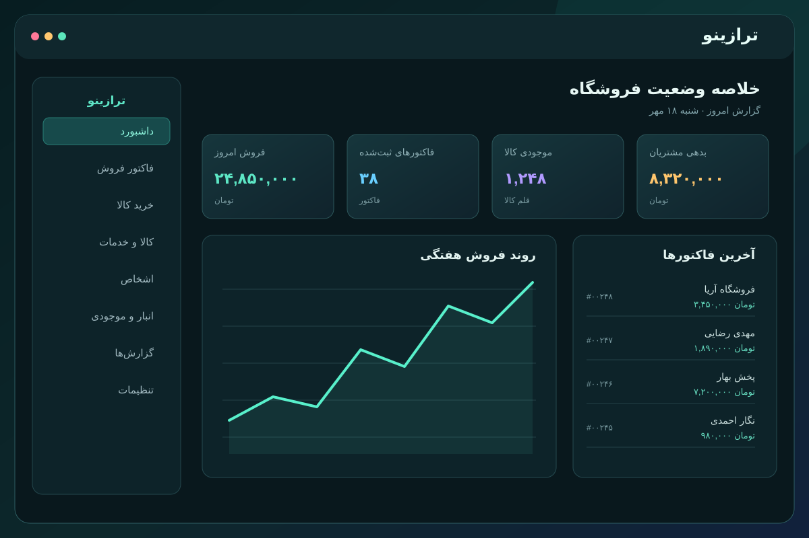
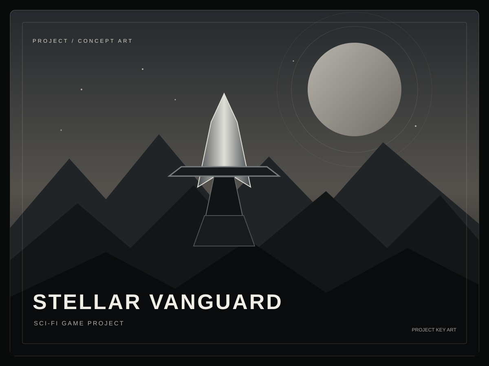

MARKET ANALYTICS01↗تحلیل بازارDESKTOP APP
POYA TRADE
POYA TRADE برای بررسی طیف گستردهای از رمزارزها ساخته شده؛ اطلاعات بازار و ابزارهای تحلیل را در یک محیط دسکتاپ کنار هم میآورد.
درباره پروژه
سلام، من پویا هستم
از ابزار تحلیل بازار تا نرمافزارهای کاربردی و بازی؛ ایدهها را به محصولی تبدیل میکنم که میشود با آن کار کرد، نه فقط دربارهاش حرف زد.
اینها پروژههاییاند که واقعاً رویشان کار کردهام؛ هرکدام مسیر و مسئله خودش را دارد.

MARKET ANALYTICS01↗POYA TRADE برای بررسی طیف گستردهای از رمزارزها ساخته شده؛ اطلاعات بازار و ابزارهای تحلیل را در یک محیط دسکتاپ کنار هم میآورد.

BUSINESS TOOLS02↗حسابداری فروشگاهی برای مدیریت خریدوفروش، کالاها، اشخاص و موجودی؛ با تمرکز بر نظم اطلاعات و گردش کار روزمره فروشگاه.

GAME PROJECT03↗STELLAR VANGUARD پروژه بازی من در فضای علمیتخیلی است؛ دنیایی که قدمبهقدم شکل میگیرد، از ایده و طراحی تا تجربه بازی.
من پویا پناهیام، ۲۲ ساله و دانشجوی حوزه برنامهنویسی. برای من جذابترین بخش کار، تبدیل یک ایده خام به چیزی است که واقعاً کار کند؛ از طراحی سایت گرفته تا ساخت نرمافزارهای ویندوز و موبایل. روی پروژههایی مثل POYA TRADE، ترازینو و STELLAR VANGUARD کار کردهام و در هرکدام سعی کردهام علاوه بر امکانات، به تجربه استفاده و جزئیات هم اهمیت بدهم. هنوز چیزهای زیادی برای یادگرفتن دارم و همین، بخش دوستداشتنی این مسیر است.
بسته به مسئله، ابزار مناسب را انتخاب میکنم؛ از ساخت رابط کاربری تا منطق برنامه و ذخیرهسازی دادهها.
برای همکاری، بازخورد یا یک گفتوگوی خوب، از این راهها پیدام کن.